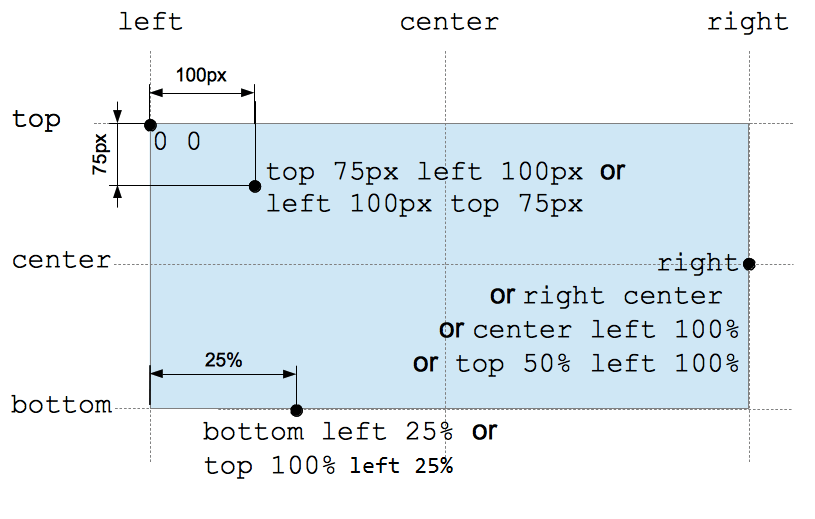

The <position> (or <bg-position>) CSS data type denotes a two-dimensional coordinate used to set a location relative to an element box. It is used in the {{cssxref("background-position")}} and {{cssxref("offset-anchor")}} properties.
Note: The final position described by the <position> value does not need to be inside the element's box.
The <position> data type is specified with one or two keywords, with optional offsets.
The keyword values are center, top, right, bottom, and left. Each keyword represents either an edge of the element's box or the center line between two edges. Depending on the context, center represents either the center between the left and right edges, or the center between the top and bottom edges.
If specified, an offset can be either a relative {{cssxref("<percentage>")}} value or an absolute {{cssxref("<length>")}} value. Positive values are offset towards the right or the bottom, whichever is appropriate. Negative values are offset in the opposite directions.
If only a single offset value is specified, it defines the x-coordinate, with the value for the other axis defaulting to center.
/* 1-value syntax */ keyword /* Either the horizontal or vertical position; the other axis defaults to center */ value /* The position on the x-axis; the y-axis defaults to 50% */ /* 2-value syntax */ keyword keyword /* A keyword for each direction (the order is irrelevant) */ keyword value /* A keyword for horizontal position, value for vertical position */ value keyword /* A value for horizontal position, keyword for vertical position */ value value /* A value for each direction (horizontal then vertical) */ /* 4-value syntax */ keyword value keyword value /* Each value is an offset from the keyword that precedes it */
[ [ left | center | right ] || [ top | center | bottom ] | [ left | center | right | <length> | <percentage> ] [ top | center | bottom | <length> | <percentage> ]? | [ [ left | right ] [ <length> | <percentage> ] ] && [ [ top | bottom ] [ <length> | <percentage> ] ] ]
Note: The {{cssxref("background-position")}} property also accepts a three-value syntax. This is not allowed in other properties that use <position>.
When animated, a point's abscissa and ordinate values are interpolated independently. However, because the speed of the interpolation is determined by a single timing function for both coordinates, the point will move in a straight line.
center left center top right 8.5% bottom 12vmin right -6px 10% 20% 8rem 14px
left right bottom top 10px 15px 20px 15px
| Specification | Status | Comment |
|---|---|---|
| {{SpecName('CSS3 Values', '#position', '<position>')}} | {{Spec2('CSS3 Values')}} | Relists links to both definitions: if {{SpecName('CSS3 Backgrounds')}} is supported, its definition of <position> must also be used. |
| {{SpecName('CSS3 Backgrounds', '#typedef-bg-position', '<bg-position>')}} | {{Spec2('CSS3 Backgrounds')}} | Defines <position> explicitly and extends it to support offsets from any edge. |
| {{SpecName('CSS2.1', 'colors.html#propdef-background-position', '<position>')}} | {{Spec2('CSS2.1')}} | Allows combination of a keyword with a {{cssxref("<length>")}} or {{cssxref("<percentage>")}} value. |
| {{SpecName('CSS1', '#background-position', '<position>')}} | {{Spec2('CSS1')}} | Defines <position> anonymously as the value of {{cssxref("background-position")}}. |
{{Compat}}